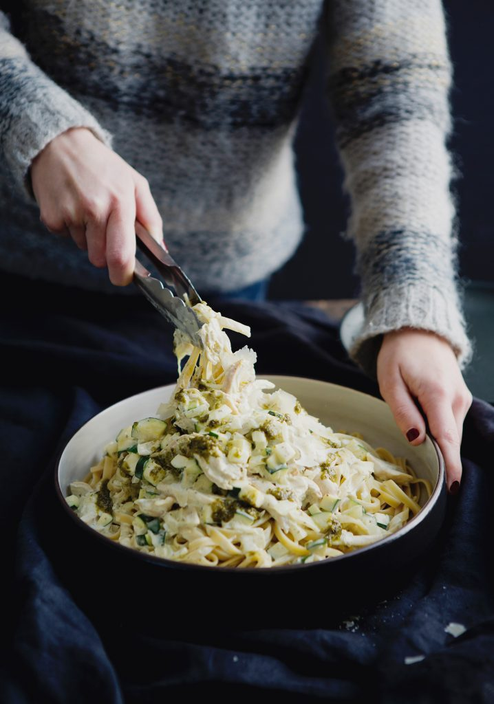

Fettucine en Sauce Crémeuse au Pesto & au Poulet
 4 servings
4 servings 25 min
25 min-
 Marilou - Trois Fois Par Jour
Marilou - Trois Fois Par Jour
 Meat
Meat Salty
Salty
Recette rapide et facile à faire avec un restant de poulet cuit. J’ai garni les pâtes avec du fromage parmesan, mais vous pouvez utiliser le fromage de votre choix.

1 boîte (375 g)fettucine1 c. è souped’huile végétale1gousse d’ail, hachée½oignon, haché1courgette verte, coupée en dés2 tassesde poulet, cuit et coupé en cubes- Fromage parmesan, rapé
- Sel et poivre, au goût
- POUR LA SAUCE
1 paquet (250 g)de fromage à la crème3/4 de tassede bouillon de poulet (ou de légumes)½ tassede crème 15%3 c. à soupede pesto de basilic- Sel et poivre, au goût
Porter un grand chaudron d’eau salée à ébullition, puis cuire les pâtes selon l’indication sur l’emballage. Égoutter et réserver.
Dans une grande poêle antiadhésive, à feu moyen, faire chauffer l’huile végétale, puis attendrir l’ail, l’oignon et la courgette pendant 5 minutes. Assaisonner.
Ajouter tous les ingrédients « pour la sauce », puis laisser mijoter pendant
5 minutes.
Incorporer le poulet et poursuivre la cuisson pendant
5 minutes.
Pour servir, napper les fettucine de sauce crémeuse, puis garnir de parmesan.